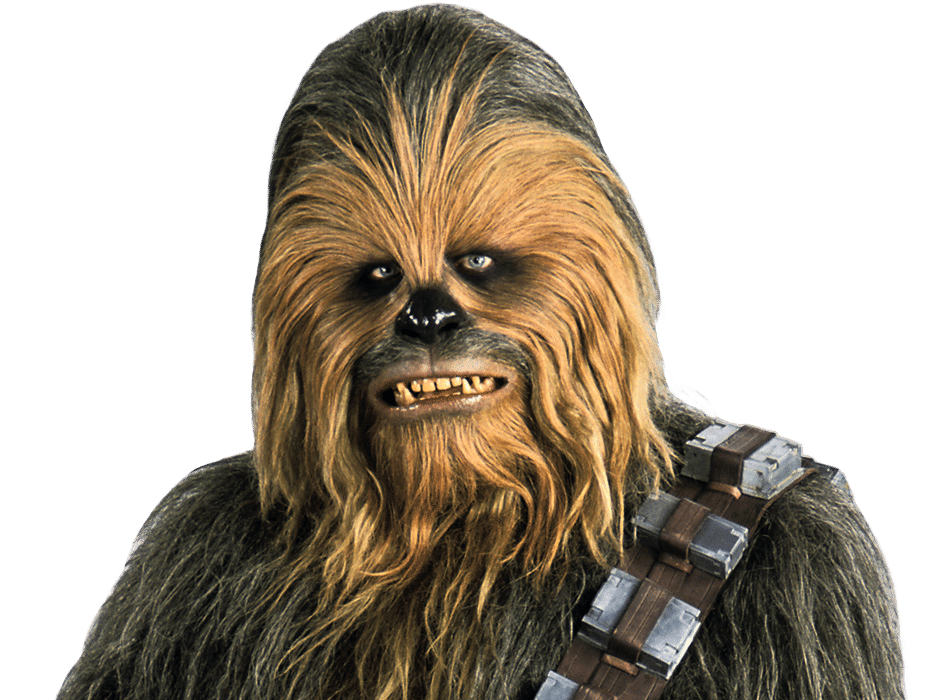

Hello, je suis Chewbacca
Je suis un personnage du Film Star Wars. Je viens de la planète Kashyyyk, je suis d'origine Wookie. Très poilu, j'adore l'action et le travail d'équipe. Même si personne ne comprend ce que je dis (sauf Han Solo, mon ancien boss), embauchez-moi, j'ai plein d'autres qualités.
Découvrez Star WarsMes compétences
- Porter des trucs lourds
- Tirer à l'arbalète
- Piloter un Falcon Millenium
- Wyaaaaaa. Ruh ruh.
Mon expérience
- 137 BY - Rebelle auprès du contrebandier Han Solo. Principales missions : instaurer la paix dans la galaxie, piloter le Falcon Millenium. Effrayer les ennemis.
- 156 BY - Mission d'infiltration sur l'Etoile Noire. Principales missions : infiltration, tir à l'arbalète
- 382 BY - Négociation d'un deal avec Jabba le Hutt. Principale mission : négoce
Mes références
Voici quelques personnes avec qui j'ai eu la chance de travailler et qui peuvent témoigner de mon sérieux et de ma résistance au stress dans des situations de crise.
- Yoda
 C3-PO
C3-PO Ewok
Ewok